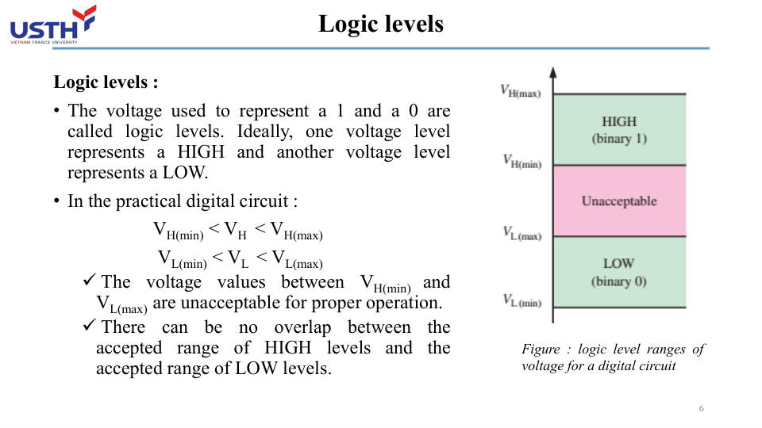
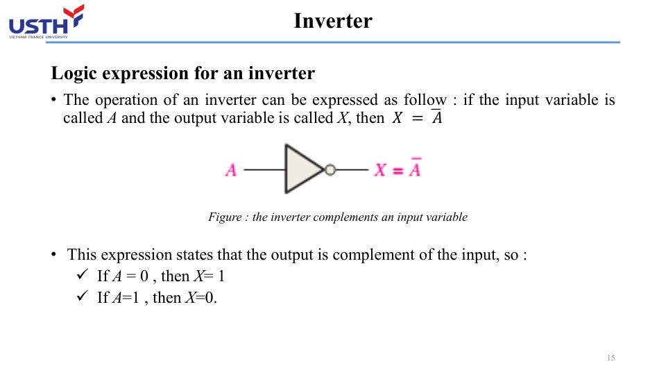
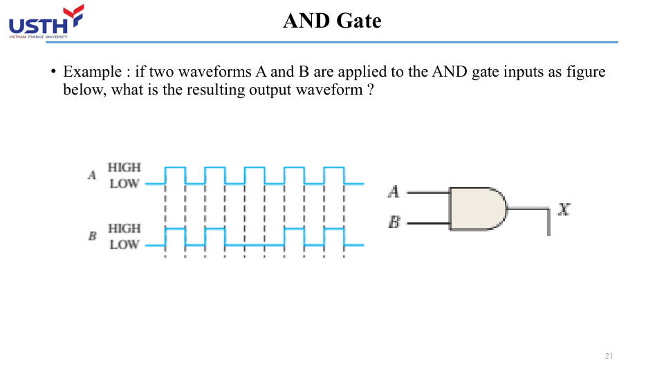
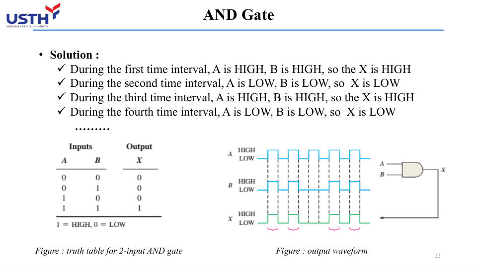
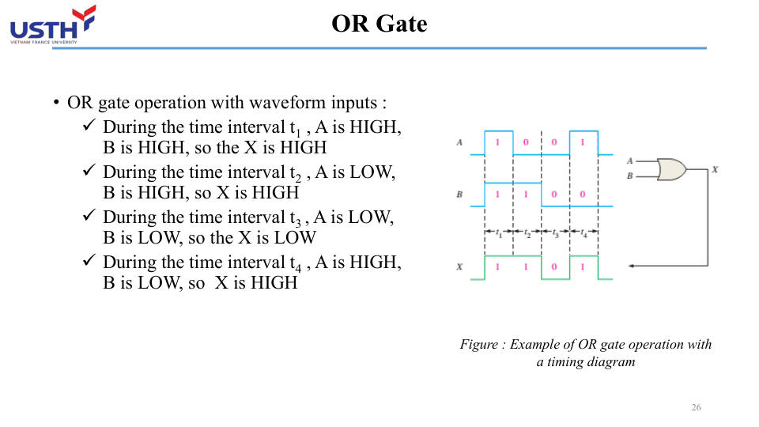
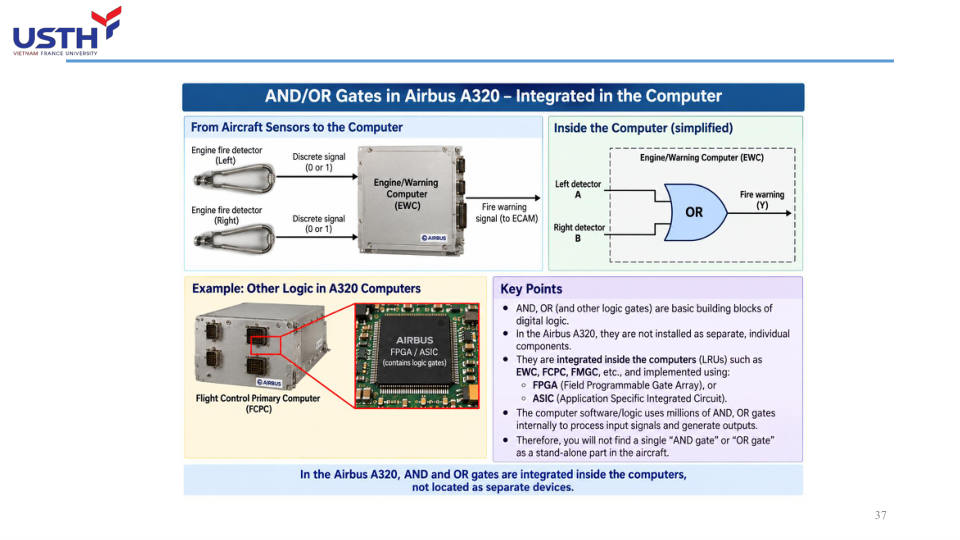
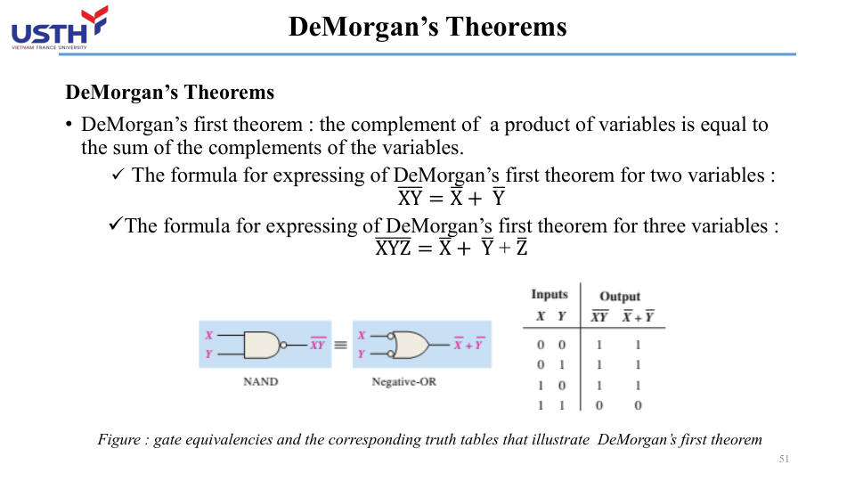
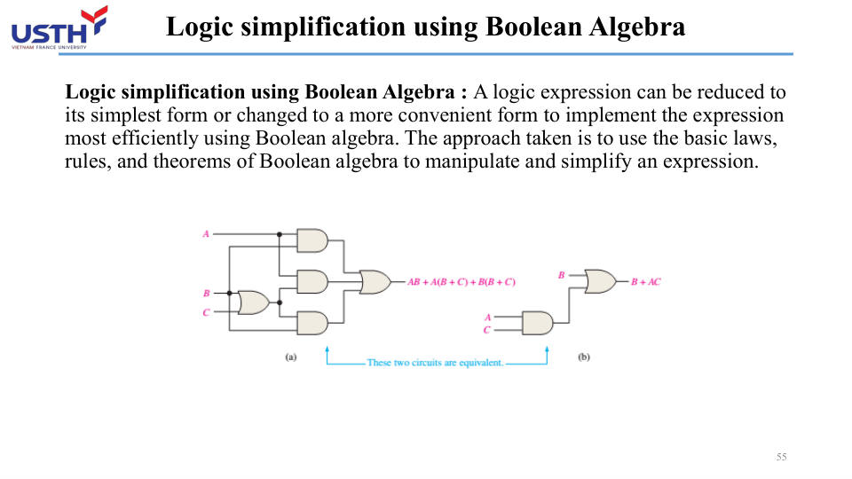
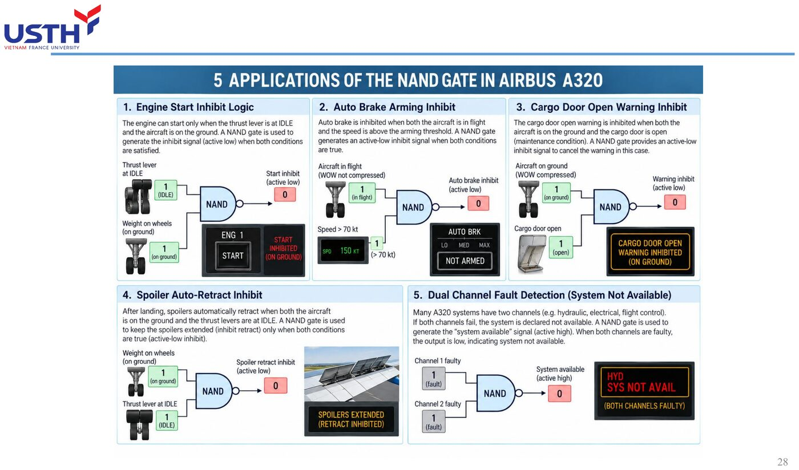
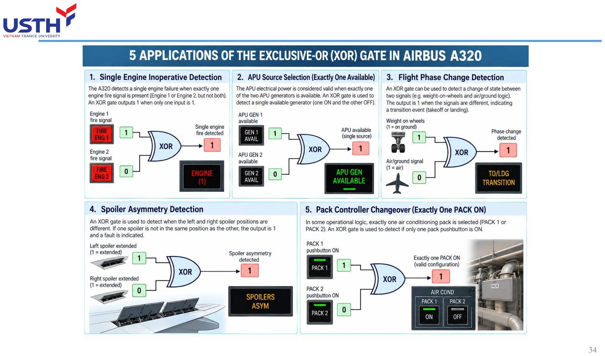

02. Cổng logic và đại số Boolean
Toàn bộ hệ thống số trên máy bay, từ cảnh báo cửa càng đáp cho tới điều khiển APU, đều được xây từ các cổng logic cơ bản kết hợp theo quy tắc đại số Boolean. Module này đi từ cổng logic đơn lẻ tới mạch tổ hợp thực tế và các họ linh kiện logic dùng trên máy bay.
CO/CLO: CO2, CO3Thời lượng (ước tính): ≈ 8,8 giờ lý thuyết60 slideCâu hỏi: 116 (96 gốc)
Slide: Logic circuit tr.1-60 · Tooley Ch.5 (tr.70-94) · Floyd Ch.3 (tr.125-190), Ch.4 (tr.191-260); chốt bistable: Ch.7 · Bản đồ nội dung sách
Tooley: Ch.5 Logic circuits (p.70-94): gates, Boolean algebra, combinational logic, tri-state, monostable/bistable, logic families
Floyd: Ch.3 Logic Gates (p.125-190) + Ch.4 Boolean Algebra and Logic Simplification (p.191-260); phần bistable đối chiếu thêm Ch.7 Latches, Flip-Flops, and Timers (p.387-448)
Tooley gộp cả gate + Boolean + bistable vào 1 chương; Floyd tách thành 3 chương riêng chi tiết hơn.
- Từ cổng logic cơ bản tới bài toán thực tế
- Đại số Boolean
- Mạch logic tổ hợp (combinational logic)
- Logic ba trạng thái, mạch đơn ổn & song ổn
- Các họ linh kiện logic (logic families)
📷 Slide gốc của giảng viên (bấm để phóng to)
60 slide
 logic·1
logic·1 logic·2
logic·2 logic·3
logic·3 logic·4
logic·4 logic·5
logic·5

logic·6 logic·7
logic·7 logic·8
logic·8 logic·9
logic·9 logic·10
logic·10 logic·11
logic·11 logic·12
logic·12 logic·13
logic·13 logic·14
logic·14

logic·15 logic·16
logic·16 logic·17
logic·17 logic·18
logic·18 logic·19
logic·19 logic·20
logic·20

logic·21

logic·22 logic·23
logic·23 logic·24
logic·24 logic·25
logic·25

logic·26 logic·27
logic·27 logic·28
logic·28 logic·29
logic·29 logic·30
logic·30 logic·31
logic·31 logic·32
logic·32 logic·33
logic·33 logic·34
logic·34 logic·35
logic·35 logic·36
logic·36

logic·37 logic·38
logic·38 logic·39
logic·39 logic·40
logic·40 logic·41
logic·41 logic·42logic·43
logic·42logic·43
 logic·44
logic·44 logic·45
logic·45 logic·46
logic·46 logic·47
logic·47 logic·48
logic·48 logic·49
logic·49 logic·50
logic·50

logic·51 logic·52
logic·52 logic·53
logic·53 logic·54
logic·54

logic·55 logic·56
logic·56 logic·57
logic·57 logic·58
logic·58 logic·59
logic·59 logic·60
logic·60Bài giảng
Từ cổng logic cơ bản tới bài toán thực tế
- AND, OR, NOT, NAND, NOR, XOR: bảng chân trị và ký hiệu
- Ví dụ mở đầu: cảnh báo cửa càng đáp chưa khoá (landing gear door warning)
Cổng logic là gì?
Một cổng logic (logic gate) là mạch điện tử có 1 hoặc nhiều đầu vào nhị phân (0 hoặc 1) và MỘT đầu ra nhị phân, được xác định bởi một hàm Boolean cố định của các đầu vào. Đây là khối xây dựng nhỏ nhất của mọi hệ thống số.
📖 Giải thích cho người mới bắt đầu
Hãy hình dung một cổng logic như một công tắc thông minh: nó nhìn vào một hoặc nhiều tín hiệu 0/1 đưa vào, rồi theo một quy tắc cố định (đã khắc sẵn trong mạch, không đổi được), quyết định đưa ra đúng một tín hiệu 0 hoặc 1 duy nhất.
Mọi thứ phức tạp trong máy tính, từ phép cộng, phép so sánh, cho tới quyết định bật đèn cảnh báo trên máy bay, đều được xây từ việc ghép nối rất nhiều cổng logic đơn giản này lại với nhau. Học kỹ 6 loại cổng cơ bản trong module này là điều kiện bắt buộc trước khi hiểu bất kỳ mạch số nào phức tạp hơn.
Cổng AND và OR
| A | B | AND | OR |
|---|---|---|---|
| 0 | 0 | 0 | 0 |
| 0 | 1 | 0 | 1 |
| 1 | 0 | 0 | 1 |
| 1 | 1 | 1 | 1 |
AND chỉ ra 1 khi TẤT CẢ đầu vào đều 1. OR ra 1 khi ÍT NHẤT MỘT đầu vào là 1.

📖 Giải thích cho người mới bắt đầu
AND và OR là hai cổng cơ bản nhất, thường bị nhầm với nhau. Cách nhớ chắc chắn nhất: hãy tưởng tượng AND như một dây xích cần TẤT CẢ các mắt xích đều chắc mới chịu được lực, chỉ cần một mắt xích lỏng (giá trị 0) là cả dây đứt (kết quả 0). OR ngược lại, giống như một mạng lưới nhiều cửa thoát hiểm: chỉ cần MỘT cửa mở (giá trị 1) là người ta thoát được, không cần mọi cửa đều mở.
Nhìn vào bảng chân trị: AND chỉ có đúng một hàng cho ra 1 (khi cả A và B đều là 1), còn OR có tới ba hàng cho ra 1 (chỉ có đúng một hàng cho ra 0, khi cả A và B đều là 0). Đây là cách nhanh nhất để phân biệt hai cổng khi nhìn vào bảng chân trị mà quên mất định nghĩa bằng lời.
Cổng NOT (đảo)
NOT chỉ có 1 đầu vào, đảo ngược trạng thái: đầu vào 0 → đầu ra 1, đầu vào 1 → đầu ra 0.

📖 Giải thích cho người mới bắt đầu
NOT là cổng đơn giản nhất vì chỉ có một đầu vào duy nhất, không cần bảng chân trị 4 hàng như các cổng 2 đầu vào khác, chỉ cần 2 hàng. Ký hiệu dấu phẩy trên (A′, đọc là “A phẩy” hoặc “not A”) hoặc dấu gạch ngang trên đầu chữ cái đều mang cùng một ý nghĩa: đảo ngược giá trị.
Một mẹo nhớ trực quan: NOT giống như một cái gương phản chiếu ngược lại đúng giá trị nhận được, không hề “suy nghĩ” gì thêm, chỉ đơn giản lật ngược 0 thành 1 và 1 thành 0.
Cổng NAND và NOR
| A | B | NAND | NOR |
|---|---|---|---|
| 0 | 0 | 1 | 1 |
| 0 | 1 | 1 | 0 |
| 1 | 0 | 1 | 0 |
| 1 | 1 | 0 | 0 |
NAND = NOT(AND), NOR = NOT(OR): mỗi cổng chỉ đơn giản đảo ngược toàn bộ cột kết quả của AND/OR tương ứng.

📖 Giải thích cho người mới bắt đầu
NAND và NOR là hai cổng “phái sinh”: lấy đúng kết quả của AND hoặc OR rồi đảo ngược toàn bộ cột kết quả đó. Cách nhớ nhanh nhất không cần lập bảng chân trị mới từ đầu: lấy bảng AND đã biết, đảo hết cột kết quả (0 thành 1, 1 thành 0) sẽ ra ngay bảng NAND; làm y hệt với OR sẽ ra bảng NOR.
Đây chính là điều tên gọi “NOT-AND” (viết tắt NAND) và “NOT-OR” (viết tắt NOR) đã nói rõ ngay từ đầu: không cần học thuộc lòng riêng biệt hai bảng chân trị mới, chỉ cần nhớ quy tắc “lấy AND/OR rồi đảo ngược” là suy ra được ngay.
Cổng XOR và XNOR
| A | B | XOR | XNOR |
|---|---|---|---|
| 0 | 0 | 0 | 1 |
| 0 | 1 | 1 | 0 |
| 1 | 0 | 1 | 0 |
| 1 | 1 | 0 | 1 |
XOR ra 1 khi hai đầu vào KHÁC nhau; XNOR (đảo của XOR) ra 1 khi hai đầu vào GIỐNG nhau : thường dùng để so sánh bit.

📖 Giải thích cho người mới bắt đầu
XOR (Exclusive-OR, HOẶC LOẠI TRỪ) là cổng dễ gây nhầm lẫn nhất vì tên gọi gần giống OR nhưng ý nghĩa khác hẳn. OR thông thường chấp nhận cả trường hợp CẢ HAI đầu vào đều là 1, còn XOR thì KHÔNG: XOR chỉ ra 1 khi hai đầu vào KHÁC NHAU (một cái là 0, cái kia là 1), và ra 0 khi hai đầu vào GIỐNG NHAU (dù cùng là 0 hay cùng là 1).
Ứng dụng thực tế quan trọng nhất của XOR là so sánh bit: nếu bạn muốn biết hai tín hiệu có đang “đồng ý” với nhau hay không, XOR sẽ báo ngay 1 khi chúng bất đồng. XNOR là cổng đảo của XOR, nên logic ngược lại: ra 1 khi hai đầu vào giống nhau.
Ví dụ: mạch 3 đầu vào A·B + C
Tính Y = A·B + C với A=1, B=0, C=1:
- Bước 1: A·B = 1·0 = 0
- Bước 2: Y = 0 + C = 0 + 1 = 1
Kết quả: Y = 1. Cách làm: luôn tính AND trước (ưu tiên như phép nhân), rồi tới OR (như phép cộng), giống thứ tự toán tử số học thông thường.
📖 Giải thích cho người mới bắt đầu
Đây là bài tập đầu tiên áp dụng quy tắc tính toán biểu thức Boolean có nhiều phép toán: giống hệt trong số học, AND (phép nhân) luôn được tính TRƯỚC OR (phép cộng) khi không có dấu ngoặc, đúng quy tắc “nhân trước, cộng sau” đã học từ lớp 1.
Với A=1, B=0, C=1, phải tính A·B trước (được 0), rồi mới cộng với C (0+1=1). Nếu tính sai thứ tự (cộng B+C trước rồi mới nhân với A), kết quả sẽ hoàn toàn khác. Luôn tự hỏi “phần nào có phép AND thì tính trước” mỗi khi gặp biểu thức có cả AND và OR.
Ví dụ: mạch (A+B)·C
Tính Y = (A+B)·C với A=0, B=1, C=0:
- Bước 1: A+B = 0+1 = 1
- Bước 2: Y = 1·C = 1·0 = 0
Kết quả: Y = 0. Dấu ngoặc buộc phải tính OR bên trong trước, dù AND thường có 'độ ưu tiên' cao hơn.
📖 Giải thích cho người mới bắt đầu
Dấu ngoặc trong đại số Boolean có vai trò giống hệt trong toán số học thông thường: nó BẮT BUỘC phần bên trong phải được tính trước, bất kể phép toán bên trong đó là AND hay OR, và bất kể quy tắc “AND trước OR” thông thường.
Với (A+B)·C, dù OR thường được tính sau AND, nhưng vì OR nằm trong ngoặc nên phải tính A+B trước tiên (ra 1), rồi mới nhân với C (1·0=0). Đây là lỗi rất dễ mắc: nhiều người quên mất dấu ngoặc và áp dụng máy móc quy tắc “AND trước”, dẫn tới tính sai thứ tự hoàn toàn.
Bảng tổng hợp 6 cổng cơ bản
| Cổng | Ký hiệu | Ra 1 khi nào |
|---|---|---|
| AND | A·B | mọi đầu vào = 1 |
| OR | A+B | ít nhất 1 đầu vào = 1 |
| NAND | (A·B)′ | ít nhất 1 đầu vào = 0 |
| NOR | (A+B)′ | mọi đầu vào = 0 |
| XOR | A⊕B | số đầu vào bằng 1 là LẺ |
| XNOR | (A⊕B)′ | số đầu vào bằng 1 là CHẴN |

📖 Giải thích cho người mới bắt đầu
Bảng tổng hợp này là công cụ tra cứu nhanh quan trọng nhất của cả Phần 1: thay vì phải nhớ 4 hàng bảng chân trị cho mỗi cổng trong 6 cổng, bạn chỉ cần nhớ ĐÚNG MỘT câu mô tả điều kiện “ra 1” của từng cổng.
Mẹo phân loại nhanh: AND và NAND liên quan tới “tất cả” (all), OR và NOR liên quan tới “ít nhất một” (at least one), còn XOR và XNOR liên quan tới việc đếm SỐ LƯỢNG đầu vào bằng 1 là chẵn hay lẻ. Ba cặp này, mỗi cặp gồm một cổng gốc và cổng đảo của nó (NAND đảo của AND, NOR đảo của OR, XNOR đảo của XOR).
⚠️ Bẫy: nhầm AND với OR khi đọc đề bằng lời
Từ 'và' trong tiếng Việt đôi khi được dùng lỏng lẻo cho cả hai nghĩa. Ví dụ đề bài 'đèn sáng khi công tắc A và công tắc B đều đóng' → đây là AND (cần CẢ HAI). Nhưng 'đèn sáng khi công tắc A hoặc công tắc B đóng' mới là OR. Luôn kiểm tra từ khóa 'đều/tất cả' (AND) so với 'hoặc/ít nhất một' (OR) trước khi vẽ mạch.
📖 Giải thích cho người mới bắt đầu
Ngôn ngữ tự nhiên (cả tiếng Việt lẫn tiếng Anh) thường dùng từ “và”/“hoặc” một cách lỏng lẻo, không chặt chẽ như logic Boolean, nên đây là nguồn lỗi rất phổ biến khi chuyển một bài toán thực tế thành biểu thức logic.
Từ khoá đáng tin cậy nhất để nhận diện: nếu đề bài dùng “đều”, “tất cả”, “cả hai” thì đó là AND; nếu dùng “hoặc”, “ít nhất một”, “bất kỳ” thì đó là OR. Luôn gạch chân đúng những từ khoá này trong đề bài trước khi vẽ mạch, đừng dựa vào cảm giác đọc lướt qua.
Tự kiểm tra nhanh
Không chấm điểm: tự trả lời trước khi sang phần tiếp theo:
- Cổng nào cho ra 1 khi CẢ HAI đầu vào đều 0?
- Nếu A=1, B=1, C=0, giá trị của A·B + C·A là bao nhiêu?
Gợi ý đáp án: NOR; A·B+C·A = 1·1+0·1 = 1+0 = 1.
📖 Giải thích cho người mới bắt đầu
Bài tự luyện áp dụng đúng hai kỹ năng vừa học: nhận diện cổng từ mô tả bảng chân trị (câu hỏi 1) và tính biểu thức nhiều phép toán theo đúng thứ tự ưu tiên (câu hỏi 2).
Với câu 2: A·B+C·A khi A=1,B=1,C=0, phải tính từng phép AND trước: A·B=1·1=1, C·A=0·1=0, rồi mới cộng hai kết quả: 1+0=1. Nếu bạn ra kết quả khác 1, rất có thể bạn đã cộng nhầm trước khi nhân, xem lại slide về thứ tự ưu tiên phép toán ở phía trên.
Đại số Boolean
- Các định luật cơ bản (giao hoán, kết hợp, phân phối, hấp thụ)
- Định lý De Morgan
- Rút gọn biểu thức logic từng bước
12 luật cơ bản của đại số Boolean
| # | Luật |
|---|---|
| 1 | A + 0 = A |
| 2 | A + 1 = 1 |
| 3 | A · 0 = 0 |
| 4 | A · 1 = A |
| 5 | A + A = A |
| 6 | A + A′ = 1 |
| 7 | A · A = A |
| 8 | A · A′ = 0 |
| 9 | A″ = A |
| 10 | A + AB = A |
| 11 | A + A′B = A + B |
| 12 | (A+B)(A+C) = A+BC |

📖 Giải thích cho người mới bắt đầu
12 luật này không phải 12 công thức rời rạc cần học thuộc vẹt: chúng là những sự thật hiển nhiên nếu bạn thay A bằng 0 hoặc 1 và thử tính tay từng luật một. Ví dụ luật A+1=1: một cổng OR mà một đầu vào luôn là 1 thì đầu ra CHẮC CHẮN luôn là 1 bất kể đầu vào kia là gì, giống hệt việc “chỉ cần một cửa luôn mở sẵn thì phòng luôn có lối thoát”.
Hãy dùng các slide tiếp theo để hiểu Ý NGHĨA của từng nhóm luật (giao hoán, kết hợp, phân phối, De Morgan) thay vì cố nhồi nhét học thuộc cả bảng ngay từ slide này.
Luật giao hoán và kết hợp
Giống hệt số học thông thường: thứ tự cộng/nhân không ảnh hưởng kết quả, và cách nhóm ngoặc trong một chuỗi toàn AND (hoặc toàn OR) cũng không ảnh hưởng.
📖 Giải thích cho người mới bắt đầu
Hai luật này đơn giản chỉ nói rằng: với một cổng AND hoặc OR thuần tuý (không trộn cả AND và OR), thứ tự viết các biến hoặc cách đặt dấu ngoặc không làm thay đổi kết quả, giống hệt trong số học (2+3=3+2, và (2+3)+4=2+(3+4)).
Điều cần lưu ý: hai luật này CHỈ áp dụng khi tất cả các số hạng dùng CÙNG một phép toán (toàn AND hoặc toàn OR). Khi biểu thức trộn cả AND và OR, cần dùng tới luật phân phối ở slide tiếp theo, không thể áp dụng giao hoán/kết hợp một cách ngây thơ.
Luật phân phối
Đây là bước then chốt để chuyển một biểu thức từ dạng tích-của-tổng (POS) sang tổng-của-tích (SOP): dạng chuẩn thường dùng khi thiết kế mạch AND-OR.
📖 Giải thích cho người mới bắt đầu
Luật phân phối là chiếc cầu nối quan trọng nhất giữa hai dạng AND và OR trộn lẫn nhau, đóng vai trò y hệt phép nhân phân phối qua phép cộng trong số học (2×(3+4)=2×3+2×4).
Ý nghĩa thực tiễn: luật này cho phép “phá ngoặc” một biểu thức tích-của-tổng (POS, ví dụ A·(B+C)) thành dạng tổng-của-tích (SOP, ví dụ A·B+A·C). Dạng SOP là dạng chuẩn hay dùng nhất khi thiết kế mạch AND-OR hai tầng, sẽ được học chi tiết ở Phần 3.
Ví dụ rút gọn: A + AB
Rút gọn Y = A + AB theo luật 10 (A + AB = A):
- Áp dụng trực tiếp luật 10 → Y = A
Kiểm tra bằng bảng chân trị: khi A=0, AB=0 nên Y=0=A; khi A=1, Y=1+B=1=A. Khớp cho mọi trường hợp → xác nhận luật 10 đúng.
📖 Giải thích cho người mới bắt đầu
Luật số 10 (A+AB=A) nghe có vẻ khó tin lúc đầu: tại sao thêm hẳn một số hạng AB vào biểu thức mà kết quả cuối cùng lại KHÔNG đổi? Câu trả lời nằm ở việc kiểm tra từng trường hợp: khi A=0, số hạng AB luôn bằng 0 (vì 0 nhân gì cũng ra 0) nên Y=0+0=0=A; khi A=1, số hạng thứ hai AB không quan trọng nữa vì Y=1+B luôn bằng 1 (theo luật A+1... không, ở đây là 1+B=1 vì OR với 1 luôn ra 1), và A cũng bằng 1, nên Y=1=A.
Bài học quan trọng hơn cả kết quả: luôn kiểm tra lại một luật rút gọn bằng cách thử TỪNG giá trị của biến, đừng chỉ tin vào công thức suông.
Ví dụ rút gọn: AB + AB′
Rút gọn Y = AB + AB′:
- Bước 1: đặt A làm nhân tử chung → Y = A(B + B′)
- Bước 2: áp dụng luật 6 (B+B′=1) → Y = A·1
- Bước 3: áp dụng luật 4 (A·1=A) → Y = A
📖 Giải thích cho người mới bắt đầu
Đây là một ví dụ rút gọn hoàn chỉnh 3 bước, mỗi bước áp dụng đúng MỘT luật đã học, không nhảy cóc. Bước 1 dùng “đặt nhân tử chung” (giống hệt đặt thừa số chung trong đại số thông thường: AB+AB′=A(B+B′)). Bước 2 dùng luật 6 (B+B′=1, một biến OR với chính nó bị đảo LUÔN LUÔN ra 1, vì hoặc B=1 hoặc B′=1, không bao giờ cả hai cùng 0). Bước 3 dùng luật 4 (A·1=A, nhân với 1 không đổi giá trị).
Cách trình bày từng bước rõ ràng thế này chính là kỹ năng cần luyện: khi làm bài rút gọn dài hơn, luôn ghi rõ ĐANG dùng luật số mấy ở mỗi bước, để dễ tự kiểm tra lại nếu sai.
Ví dụ rút gọn nhiều bước: AB + A′C + BC
Rút gọn Y = AB + A′C + BC (định lý đồng nhất/consensus theorem):
- Số hạng BC là 'dư thừa' khi đã có AB và A′C
- Kết quả rút gọn: Y = AB + A′C
Đây là ví dụ kinh điển cho thấy rút gọn Boolean đôi khi cần nhận ra một số hạng hoàn toàn dư thừa (consensus term), không chỉ áp dụng luật cơ bản từng bước.
📖 Giải thích cho người mới bắt đầu
Đây là ví dụ khó nhất trong Phần 2, vì bước rút gọn số hạng BC không đến từ việc áp dụng máy móc một luật cơ bản nào trong 12 luật, mà đòi hỏi NHẬN RA rằng BC là “số hạng dư thừa” khi đã có sẵn AB và A′C.
Trực giác đơn giản: nếu AB=1 thì chắc chắn B=1; nếu A′C=1 thì chắc chắn A′=1 (tức A=0). Xét mọi trường hợp B và C cùng bằng 1: hoặc A=1 (khi đó AB=1, số hạng BC dù có mặt hay không cũng không ảnh hưởng vì Y đã bằng 1), hoặc A=0 (khi đó A′C=1, cũng đã đủ làm Y=1). Vậy BC không bao giờ là số hạng “cứu” được trường hợp mà AB và A′C đều chưa cứu, nên bỏ nó đi không ảnh hưởng kết quả.
Định lý De Morgan
- Ý nghĩađảo dấu của tích = tổng các đảo; đảo dấu của tổng = tích các đảo

📖 Giải thích cho người mới bắt đầu
De Morgan là định lý quan trọng bậc nhất trong toàn bộ đại số Boolean, vì nó cho biết cách “phá” dấu đảo (NOT) khi dấu đảo đó bao trùm cả một cụm AND hoặc OR, một thao tác cực kỳ hay gặp khi đơn giản hoá mạch.
Cách nhớ trực quan không cần học thuộc công thức: khi đảo một biểu thức có dấu ngoặc, hãy làm hai việc CÙNG LÚC: đổi phép toán bên trong (AND thành OR, hoặc OR thành AND), và đảo TỪNG biến riêng lẻ bên trong ngoặc. Nhớ đúng “đổi phép toán + đảo từng biến” là đủ để áp dụng đúng De Morgan mà không cần nhớ công thức bằng ký hiệu.
Ứng dụng De Morgan: đơn giản hoá (A′B′)′
Rút gọn Y = (A′B′)′:
- Áp dụng De Morgan: (A′B′)′ = (A′)′ + (B′)′ = A + B
Kết quả Y = A + B: một cổng NAND với 2 đầu vào đã đảo tương đương một cổng OR thường, minh hoạ vì sao NAND được coi là cổng vạn năng.
📖 Giải thích cho người mới bắt đầu
Đây là một trong những kết quả bất ngờ nhất mà De Morgan mang lại: một cổng NAND (hai đầu vào đã bị đảo trước khi đưa vào) hoá ra tương đương HOÀN TOÀN với một cổng OR bình thường. Điều này giải thích vì sao cổng NAND được gọi là “cổng vạn năng” (universal gate): chỉ với NAND, người ta có thể dựng lại được cả AND, OR, và NOT.
Về mặt thực hành trong công nghiệp bán dẫn, đây không chỉ là một trò chơi công thức: nhà sản xuất chip có thể sản xuất hàng loạt CHỈ một loại cổng NAND, rồi ghép chúng lại theo nhiều cách khác nhau để tạo ra mọi loại cổng khác, giúp đơn giản hoá và giảm chi phí sản xuất.
Bảng chân trị và Karnaugh map 2 biến
Với Y = A′B + AB′ + AB (3 tổ hợp cho ra 1 trong 4 tổ hợp có thể):
| A\B | 0 | 1 |
|---|---|---|
| 0 | 0 | 1 |
| 1 | 1 | 1 |
Nhóm 2 ô kề trong K-map (hàng dưới) cho A, nhóm cột phải cho B → rút gọn về Y = A + B.
📖 Giải thích cho người mới bắt đầu
Bìa Karnaugh (K-map) 2 biến là công cụ trực quan hoá bảng chân trị thành một lưới ô vuông, giúp mắt người NHÌN THẤY ngay các nhóm số 1 liền kề thay vì phải áp dụng đại số từng bước.
Với bảng đã cho, hàng dưới (A=1) toàn số 1: nhóm 2 ô này lại cho ra đúng biến A (không phụ thuộc B). Cột phải (B=1) cũng toàn số 1: nhóm này cho ra đúng biến B. Việc “thấy” được hai nhóm chồng lấn này trực tiếp trên lưới nhanh hơn nhiều so với làm đại số Boolean từng bước, đặc biệt khi số biến tăng lên 3 hoặc 4.
⚠️ Bẫy: áp dụng De Morgan sai khi có 3 biến trở lên
Nhiều người chỉ đảo dấu phép toán ngoài cùng mà quên đảo TỪNG biến bên trong. (ABC)′ KHÔNG PHẢI là A′B′C: đáp án đúng là (ABC)′ = A′+B′+C′ (áp dụng liên tiếp De Morgan cho từng cặp biến).
📖 Giải thích cho người mới bắt đầu
Đây là lỗi cực kỳ phổ biến khi áp dụng De Morgan cho 3 biến trở lên: nhiều người chỉ đảo dấu phép toán ở NGOÀI CÙNG mà quên phải đảo TỪNG biến bên trong. (ABC)′ tuyệt đối KHÔNG bằng A′B′C (chỉ đảo biến đầu tiên), mà phải đảo cả ba biến VÀ đổi phép toán: (ABC)′=A′+B′+C′.
Cách kiểm tra không cần nhớ công thức: áp dụng De Morgan LIÊN TIẾP từng cặp một, giống bóc từng lớp hành. (ABC)′=((AB)C)′, áp dụng De Morgan cho ngoặc ngoài trước: =(AB)′+C′, rồi áp dụng tiếp cho (AB)′: =(A′+B′)+C′=A′+B′+C′. Làm từng bước nhỏ như vậy sẽ không bao giờ bỏ sót biến nào.
Mạch logic tổ hợp (combinational logic)
- Từ bảng chân trị tới sơ đồ mạch
- Ví dụ: mạch điều khiển khởi động APU
Mạch tổ hợp là gì?
Mạch tổ hợp (combinational logic) là mạch mà đầu ra tại một thời điểm CHỈ phụ thuộc vào giá trị đầu vào hiện tại, không phụ thuộc lịch sử/trạng thái trước đó: khác với mạch tuần tự (sequential) có nhớ trạng thái (sẽ học ở phần bistable).
📖 Giải thích cho người mới bắt đầu
Định nghĩa “mạch tổ hợp” nghe trừu tượng, nhưng có một cách kiểm tra rất cụ thể: nếu bạn thiết lập đúng các giá trị đầu vào của một mạch tổ hợp, đầu ra sẽ LUÔN LUÔN giống hệt nhau mỗi lần, bất kể mạch đã “trải qua” những gì trước đó. Một cổng AND đơn giản là ví dụ điển hình: A=1,B=1 luôn cho ra 1, dù 1 giây trước đó đầu vào là gì đi nữa.
Ngược lại, mạch tuần tự (sẽ gặp ở Phần 4 với flip-flop) có “trí nhớ”: cùng một giá trị đầu vào có thể cho ra hai đầu ra khác nhau tuỳ vào trạng thái trước đó của mạch. Phân biệt được hai loại này là nền tảng để hiểu toàn bộ phần còn lại của module.
Từ bài toán thực tế tới bảng chân trị
Bài toán: đèn cảnh báo cửa càng đáp (Landing Gear Door Warning) sáng khi CÓ ÍT NHẤT MỘT trong 2 cửa (trái/phải) chưa khoá VÀ máy bay đang bay (không phải trên mặt đất).
Đặt L = cửa trái chưa khoá, R = cửa phải chưa khoá, F = đang bay (in-flight). Cần: Warning = (L+R)·F.
📖 Giải thích cho người mới bắt đầu
Đây là bước quan trọng nhất trong toàn bộ quy trình thiết kế mạch số: dịch một câu mô tả bằng lời (ngôn ngữ tự nhiên) thành các biến logic rõ ràng và một biểu thức Boolean chính xác. Bước này thường bị bỏ qua vội vàng, nhưng chính là nơi dễ hiểu sai đề bài nhất.
Với bài toán cửa càng đáp: cụm từ “ít nhất một cửa chưa khoá” dịch thành phép OR (L+R), còn cụm từ “VÀ đang bay” dịch thành phép AND với biến F. Ghép lại đúng thứ tự: Warning=(L+R)·F, không phải L+R·F (thiếu ngoặc sẽ làm sai hoàn toàn ý nghĩa, vì khi đó theo thứ tự ưu tiên AND trước, R·F sẽ được tính trước, sai hẳn ý đồ ban đầu).
Bảng chân trị mạch cảnh báo cửa càng đáp
| L | R | F | Warning=(L+R)·F |
|---|---|---|---|
| 0 | 0 | 1 | 0 |
| 1 | 0 | 1 | 1 |
| 0 | 1 | 1 | 1 |
| 1 | 1 | 0 | 0 |
Hàng cuối minh hoạ: dù cả 2 cửa chưa khoá (L=R=1), nếu máy bay đang ở mặt đất (F=0) thì KHÔNG cảnh báo: đúng logic AND với F.
📖 Giải thích cho người mới bắt đầu
Bảng chân trị này chỉ cần liệt kê những tổ hợp có Ý NGHĨA THỰC TẾ (ở đây giả định F là biến quan trọng nhất nên được xét đủ hai giá trị, nhưng bảng đầy đủ 3 biến sẽ có 8 hàng; bảng rút gọn ở đây chọn lọc 4 hàng minh hoạ then chốt).
Hàng đáng chú ý nhất là hàng cuối: L=1, R=1 (cả hai cửa đều chưa khoá, trường hợp nguy hiểm nhất xét riêng về cửa), nhưng F=0 (máy bay đang ở mặt đất) thì Warning vẫn bằng 0, KHÔNG cảnh báo. Đây chính là điểm mấu chốt của phép AND với F: dù điều kiện cửa tệ tới đâu, máy bay ở mặt đất thì không cần cảnh báo phi công giữa lúc đang cất/hạ cánh.
Từ bảng chân trị tới sơ đồ cổng
Sơ đồ mạch cho Warning = (L+R)·F cần:
- 1 cổng OR 2 đầu vào (L, R) → cho ra tín hiệu 'có ít nhất 1 cửa mở'
- 1 cổng AND 2 đầu vào (đầu ra OR, và F) → cho ra tín hiệu cảnh báo cuối cùng

📖 Giải thích cho người mới bắt đầu
Việc vẽ sơ đồ cổng logic từ biểu thức Boolean gần như là “dịch ngược”: mỗi phép toán trong biểu thức tương ứng với đúng một cổng vật lý. Warning=(L+R)·F có hai phép toán (một OR, một AND), nên sơ đồ cần đúng hai cổng.
Thứ tự vẽ luôn đi từ TRONG NGOẶC ra ngoài: cổng OR (nhận L, R) phải được vẽ và tính trước, đầu ra của nó mới được đưa vào làm một trong hai đầu vào của cổng AND (đầu vào còn lại là F). Nếu vẽ sai thứ tự (đưa L, R, F cùng vào một cổng AND ba đầu vào), mạch sẽ tính sai hoàn toàn ý nghĩa phép OR.
Ví dụ 2: mạch khởi động APU (đơn giản hoá)
Theo Tooley: mạch điều khiển khởi động APU (auxiliary power unit) cần điều kiện AND của nhiều tín hiệu an toàn (vd: không có cảnh báo cháy, tốc độ động cơ trong ngưỡng an toàn) trước khi cho phép relay khởi động đóng mạch: một ví dụ AND nhiều đầu vào trong thực tế, không chỉ 2 biến như ví dụ cửa càng đáp.
📖 Giải thích cho người mới bắt đầu
Ví dụ khởi động APU (Auxiliary Power Unit, động cơ phụ trợ cấp điện/khí nén khi động cơ chính chưa chạy) cho thấy AND nhiều đầu vào trong thực tế không hề hiếm: an toàn hàng không thường đòi hỏi RẤT NHIỀU điều kiện phải đồng thời đúng trước khi cho phép một hành động quan trọng xảy ra.
Nguyên tắc thiết kế an toàn ở đây là “fail-safe”: chỉ cần MỘT điều kiện an toàn không thoả (ví dụ có cảnh báo cháy), toàn bộ chuỗi AND lập tức cho ra 0, ngăn không cho relay khởi động đóng mạch. Đây là lý do AND nhiều đầu vào (không chỉ 2 biến) xuất hiện rất phổ biến trong các hệ thống bảo vệ an toàn của máy bay.
Thiết kế mạch 3 biến từ bảng chân trị (SOP)
Cho bảng chân trị Y=1 khi (A,B,C) = (0,1,1) hoặc (1,0,1). Viết dạng tổng-của-tích (SOP) bằng cách lấy OR của các minterm ứng với mỗi hàng có Y=1:
Rút gọn tiếp bằng cách đặt C chung: Y = C(A′B + AB′) = C(A⊕B).
📖 Giải thích cho người mới bắt đầu
SOP (Sum of Products, tổng-của-tích) là một quy trình CƠ HỌC để viết biểu thức Boolean trực tiếp từ bảng chân trị, không cần đoán mò: với mỗi hàng có Y=1, viết ra đúng một “minterm” (một cụm AND của tất cả các biến, viết nguyên bản nếu biến đó bằng 1 trong hàng đó, viết đảo nếu biến đó bằng 0), rồi OR tất cả các minterm này lại với nhau.
Với (A,B,C)=(0,1,1) cho Y=1: A=0 nên viết A′, B=1 nên viết B, C=1 nên viết C, ghép AND lại được A′BC. Làm tương tự với hàng (1,0,1) được AB′C. OR hai minterm lại: Y=A′BC+AB′C. Sau đó mới rút gọn tiếp bằng đại số (ở đây đặt C chung, dùng nhận diện A′B+AB′=A⊕B).
Mạch AND-OR hai tầng
Một mạch tổ hợp SOP tổng quát luôn có thể vẽ dưới dạng 2 tầng: TẦNG 1 là các cổng AND (mỗi cổng ứng với 1 số hạng tích), TẦNG 2 là MỘT cổng OR gộp tất cả đầu ra của tầng 1: đây là cấu trúc chuẩn dùng khi lập trình PLD/PAL.
📖 Giải thích cho người mới bắt đầu
Kiến trúc “AND-OR hai tầng” là một sự thật toán học rất mạnh: BẤT KỲ hàm Boolean nào, dù phức tạp tới đâu, luôn có thể viết được dưới dạng SOP, và do đó luôn vẽ được bằng đúng 2 tầng cổng (tầng AND rồi tới tầng OR), không cần nhiều tầng lồng nhau phức tạp hơn.
Đây chính là lý do các chip PLD/PAL (Programmable Logic Device) được thiết kế sẵn với cấu trúc cố định “một mảng AND rồi tới một mảng OR”: người lập trình chỉ cần cấu hình đúng các kết nối, không cần lo về việc “có đủ tầng cổng hay không” cho bất kỳ hàm logic nào.
So sánh SOP và POS
| SOP (tổng-của-tích) | POS (tích-của-tổng) | |
|---|---|---|
| Dạng | Y = AB + A′C | Y = (A+C)(A′+B) |
| Lấy từ | các hàng có Y=1 (minterm) | các hàng có Y=0 (maxterm), rồi đảo |
| Cấu trúc mạch | AND rồi OR | OR rồi AND |
📖 Giải thích cho người mới bắt đầu
SOP và POS là hai cách viết TƯƠNG ĐƯƠNG của cùng một hàm Boolean, chỉ khác ở điểm xuất phát: SOP xuất phát từ các hàng CÓ Y=1 (minterm), còn POS xuất phát từ các hàng CÓ Y=0 (maxterm), rồi áp dụng De Morgan để đảo ngược lại.
Lựa chọn dùng SOP hay POS trong thực tế thường phụ thuộc vào việc dạng nào cho ra biểu thức GỌN HƠN sau khi rút gọn: nếu bảng chân trị có ÍT hàng Y=1 hơn hàng Y=0, SOP thường gọn hơn (ít minterm cần OR lại); ngược lại thì POS có thể gọn hơn.
⚠️ Bẫy: quên kiểm tra lại toàn bộ bảng chân trị sau khi rút gọn
Sau khi rút gọn biểu thức bằng đại số, LUÔN dựng lại bảng chân trị của biểu thức đã rút gọn và so với bảng gốc cho TẤT CẢ tổ hợp: chỉ kiểm tra 1-2 hàng dễ khiến bỏ sót lỗi rút gọn sai ở một nhánh ít gặp.
📖 Giải thích cho người mới bắt đầu
Đây là một thói quen kiểm tra chất lượng cực kỳ quan trọng nhưng rất hay bị bỏ qua khi làm bài tập: sau khi rút gọn một biểu thức bằng đại số qua nhiều bước, RẤT DỄ mắc lỗi ở một bước trung gian nào đó mà không nhận ra ngay.
Cách kiểm tra chắc chắn nhất: dựng lại TOÀN BỘ bảng chân trị của biểu thức đã rút gọn (tất cả các tổ hợp biến có thể, không chỉ 1-2 hàng ngẫu nhiên), rồi so với bảng chân trị GỐC ban đầu. Nếu khớp ở TẤT CẢ các hàng, phép rút gọn chắc chắn đúng; nếu chỉ kiểm tra 1-2 hàng “cho có” mà bỏ qua các hàng còn lại, rất dễ bỏ sót một lỗi rút gọn nằm ở nhánh ít gặp.
Tự kiểm tra nhanh
Không chấm điểm: viết biểu thức SOP cho mạch có Y=1 khi (A,B)=(0,1) hoặc (1,1). Gợi ý: Y = A′B + AB, rút gọn theo luật 11/luật hấp thụ sẽ ra Y = B.
📖 Giải thích cho người mới bắt đầu
Bài tự luyện áp dụng đúng quy trình SOP đã học: với Y=1 khi (A,B)=(0,1) hoặc (1,1), viết hai minterm tương ứng (A′B cho hàng đầu, AB cho hàng sau) rồi OR lại: Y=A′B+AB.
Bước rút gọn tiếp theo dùng đúng luật 11 (A+A′B=A+B, đảo vai trò một chút: ở đây là B+A′B=B+A theo cách viết khác, hoặc trực tiếp đặt B làm nhân tử chung: Y=B(A′+A)=B·1=B theo luật 6 và luật 4). Kết quả B đơn giản hơn NHIỀU so với biểu thức SOP ban đầu, minh hoạ rõ giá trị của bước rút gọn đại số sau khi viết SOP thô.
Logic ba trạng thái, mạch đơn ổn & song ổn
- Tri-state logic dùng để chia sẻ bus
- Monostable (one-shot) và bistable (flip-flop)
Tri-state logic là gì?
Logic 3 trạng thái (tri-state) có thêm trạng thái thứ 3 ngoài 0 và 1: trở kháng cao (High-Z), tại đó đầu ra 'ngắt' khỏi mạch như thể không kết nối. Điều này cho phép NHIỀU thiết bị chia sẻ chung MỘT đường bus mà không gây xung đột tín hiệu.
📖 Giải thích cho người mới bắt đầu
Logic 3 trạng thái nghe có vẻ mâu thuẫn với nguyên lý “chỉ có 2 mức điện áp” đã học ở Module 01, nhưng thực ra không mâu thuẫn: High-Z không phải một MỨC ĐIỆN ÁP thứ ba, mà là trạng thái đầu ra hoàn toàn “buông tay”, không đẩy dòng điện ra cũng không hút dòng điện vào, giống hệt một công tắc đèn đang ở vị trí giữa, không nối vào đâu cả.
Lợi ích cốt lõi: nếu không có High-Z, mỗi thiết bị nối vào một đường bus chung sẽ luôn “cố gắng” áp đặt mức điện áp của mình lên đường dây, gây xung đột khi nhiều thiết bị nối chung. High-Z cho phép một thiết bị “im lặng hoàn toàn”, nhường đường bus cho thiết bị khác.
Chân Enable trên bộ đệm tri-state
| Enable | Input | Output |
|---|---|---|
| 0 | X (bất kỳ) | High-Z (ngắt) |
| 1 | 0 | 0 |
| 1 | 1 | 1 |
Chỉ khi Enable=1, bộ đệm mới truyền tín hiệu đầu vào ra đầu ra; Enable=0 luôn cho High-Z bất kể input.
📖 Giải thích cho người mới bắt đầu
Chân Enable hoạt động như một “công tắc tổng” quyết định bộ đệm có được phép lên tiếng hay không, hoàn toàn tách biệt khỏi giá trị Input đang là gì. Bảng chân trị cho thấy rõ: dù Input là 0 hay 1, chỉ cần Enable=0 thì Output LUÔN LUÔN là High-Z, Input bị “khoá lại” không truyền ra ngoài.
Chỉ khi Enable=1, bộ đệm mới “mở cửa” cho Input đi thẳng qua Output không đổi. Đây là cơ chế cho phép nhiều thiết bị chia sẻ một đường bus: tại một thời điểm chỉ đúng một thiết bị được cấp Enable=1, mọi thiết bị còn lại đều Enable=0 để giữ im lặng ở High-Z.
Vì sao bus cần tri-state
Nếu 2 thiết bị cùng nối trực tiếp (không qua tri-state) vào 1 đường dây và một thiết bị đưa ra logic 1 trong khi thiết bị kia đưa ra logic 0 cùng lúc, sẽ xảy ra xung đột điện (bus contention): có thể gây hỏng linh kiện. Tri-state giải quyết bằng cách chỉ CHO PHÉP đúng 1 thiết bị 'nói' trên bus tại một thời điểm, các thiết bị còn lại ở High-Z.
📖 Giải thích cho người mới bắt đầu
Hãy tưởng tượng hai người cùng hét lên hai từ khác nhau vào cùng một micro tại cùng một thời điểm: âm thanh thu được sẽ hỗn loạn, không nghe rõ ai nói gì. Trên một đường bus điện, nếu hai thiết bị cùng lúc cố gắng áp đặt logic 1 và logic 0 lên cùng một dây dẫn, dòng điện lớn bất thường có thể chạy qua (bus contention), sinh nhiệt và có nguy cơ làm hỏng vĩnh viễn linh kiện.
Giải pháp tri-state giống như một “quy tắc lịch sự”: tại một thời điểm, CHỈ đúng một thiết bị được phép “nói” (Enable=1, đưa ra 0 hoặc 1 rõ ràng), mọi thiết bị còn lại phải “im lặng hoàn toàn” (High-Z), không được cùng lúc cố gắng áp đặt tín hiệu của mình lên đường bus.
Monostable (one-shot) là gì?
Mạch đơn ổn định (monostable/one-shot) chỉ có 1 trạng thái ổn định. Khi nhận một xung kích (trigger), nó chuyển sang trạng thái thứ 2 trong một khoảng thời gian cố định (do hằng số RC quyết định), rồi TỰ ĐỘNG quay về trạng thái ổn định ban đầu.
📖 Giải thích cho người mới bắt đầu
Từ “one-shot” (bắn một phát) mô tả rất chính xác hành vi của mạch monostable: nó chỉ phản ứng ĐÚNG MỘT LẦN cho mỗi xung kích, tạo ra một xung đầu ra có độ rộng CỐ ĐỊNH (không phụ thuộc độ rộng xung kích đầu vào), rồi tự động quay trở lại trạng thái nghỉ ban đầu mà không cần ai can thiệp.
Điểm mấu chốt cần nhớ: độ rộng của xung đầu ra được quyết định bởi các linh kiện R và C gắn ngoài mạch (hằng số thời gian RC), KHÔNG phụ thuộc vào việc xung kích đầu vào dài hay ngắn. Đây chính là lý do monostable được dùng để “chuẩn hoá” độ rộng một tín hiệu.
Ứng dụng monostable
Monostable thường dùng để tạo một xung có độ rộng CỐ ĐỊNH từ một xung kích có độ rộng bất kỳ (vd làm sạch/định hình tín hiệu nhiễu từ công tắc cơ khí: debounce), hoặc tạo trễ thời gian ngắn giữa 2 sự kiện trong một chuỗi điều khiển.
📖 Giải thích cho người mới bắt đầu
Ứng dụng “debounce” (khử rung công tắc) là ví dụ kinh điển nhất của monostable: khi một công tắc cơ khí bị gạt, các tiếp điểm kim loại bên trong thực ra nảy qua nảy lại rất nhanh trong vài mili-giây trước khi ổn định hẳn, tạo ra một chuỗi xung nhiễu thay vì một cạnh chuyển trạng thái sạch sẽ.
Mạch monostable “lọc” chuỗi nhiễu này bằng cách chỉ phản ứng với xung kích ĐẦU TIÊN, rồi tạo ra một xung đầu ra sạch có độ rộng đủ dài để “che” hết khoảng thời gian nảy tiếp điểm còn lại, giúp mạch số phía sau chỉ nhận đúng MỘT sự kiện chuyển trạng thái duy nhất thay vì hàng chục xung nhiễu giả.
Bistable (flip-flop) là gì?
Mạch song ổn định (bistable) có HAI trạng thái ổn định, có thể duy trì mãi mãi cho tới khi có tín hiệu điều khiển làm nó chuyển trạng thái: đây chính là flip-flop, đơn vị nhớ 1-bit cơ bản của mọi mạch tuần tự (thanh ghi, bộ đếm, bộ nhớ).
📖 Giải thích cho người mới bắt đầu
Từ “bistable” (song ổn định) nói lên đúng bản chất: mạch có HAI trạng thái đều ổn định như nhau, và một khi đã ở một trong hai trạng thái đó, nó sẽ Ở YÊN MÃI MÃI (không tự động quay về trạng thái nào cả, khác hẳn monostable) cho tới khi có một tín hiệu điều khiển bên ngoài chủ động yêu cầu nó đổi sang trạng thái kia.
Đây chính là cơ chế “nhớ” cơ bản nhất trong điện tử số: một bit dữ liệu (0 hoặc 1) được lưu giữ bằng cách mạch bistable duy trì đúng một trong hai trạng thái ổn định của nó, cho tới khi bị ghi đè bởi một lệnh ghi mới. Mọi thanh ghi, bộ đếm, và ô nhớ RAM tĩnh (SRAM) đều xây dựng từ nguyên lý này.
Flip-flop R-S (Reset-Set) đơn giản
| S | R | Q (tiếp theo) |
|---|---|---|
| 0 | 0 | giữ nguyên |
| 1 | 0 | 1 (set) |
| 0 | 1 | 0 (reset) |
| 1 | 1 | không hợp lệ |
Có thể dựng từ 2 cổng NOR hoặc 2 cổng NAND nối chéo: chính là ví dụ mạch dual R-S bistable dùng IC 4001 (CMOS NOR) nêu trong sách Tooley.
📖 Giải thích cho người mới bắt đầu
Bảng chân trị flip-flop R-S đọc theo đúng nghĩa đen của tên gọi: S (Set) đặt đầu ra Q về 1, R (Reset) đặt Q về 0. Điều đặc biệt nhất nằm ở hàng đầu tiên (S=0, R=0): đầu ra Q “giữ nguyên” giá trị trước đó, đây chính là biểu hiện của “trí nhớ”, đầu ra không do đầu vào TẠI THỜI ĐIỂM HIỆN TẠI quyết định hoàn toàn, mà còn phụ thuộc lịch sử.
Hàng cuối (S=1, R=1) bị đánh dấu “không hợp lệ” vì đây là tình huống mạch được yêu cầu ĐỒNG THỜI set và reset, một mệnh lệnh mâu thuẫn mà mạch NOR/NAND chéo không thể xử lý nhất quán: kết quả thực tế phụ thuộc vào chi tiết trễ tín hiệu của từng cổng, không dự đoán chắc chắn được, nên luôn phải TRÁNH đưa mạch vào tổ hợp đầu vào này khi thiết kế.
Bảng so sánh Monostable và Bistable
| Monostable | Bistable | |
|---|---|---|
| Số trạng thái ổn định | 1 | 2 |
| Sau khi kích | tự quay về ban đầu | giữ nguyên tới khi bị đổi |
| Chức năng chính | tạo xung/độ trễ thời gian | lưu trữ 1 bit dữ liệu |
📖 Giải thích cho người mới bắt đầu
Bảng so sánh này đúc kết lại điểm khác biệt cốt lõi nhất giữa hai loại mạch song ổn định và đơn ổn định chỉ trong một câu duy nhất: monostable TỰ ĐỘNG quay về sau một khoảng thời gian cố định (dùng để TẠO xung/độ trễ), còn bistable Ở YÊN MÃI MÃI cho tới khi bị chủ động thay đổi (dùng để LƯU TRỮ dữ liệu).
Ghi nhớ đúng một câu phân biệt này sẽ giúp bạn không bao giờ nhầm lẫn khi gặp một bài toán thực tế: nếu đề bài nói tới “tạo một xung có độ dài cố định” hay “làm chậm tín hiệu một khoảng thời gian”, đó là bài toán monostable; nếu đề bài nói tới “lưu lại trạng thái”, “nhớ đã bấm nút hay chưa”, đó là bài toán bistable.
⚠️ Bẫy: nhầm High-Z với logic 0
High-Z KHÔNG phải là mức điện áp thấp (logic 0): đó là trạng thái đầu ra hoàn toàn 'thả nổi', không có dòng điện chảy ra. Đo bằng đồng hồ vạn năng ở chế độ điện áp có thể cho kết quả không ổn định/nhiễu vì đầu ra không được điều khiển bởi bất kỳ nguồn nào.
📖 Giải thích cho người mới bắt đầu
Đây là một trong những bẫy đo lường thực tế hay gặp nhất khi làm việc với mạch tri-state: nhiều người mới học nghĩ rằng High-Z đơn giản là “logic 0” hay “điện áp thấp”, nhưng thực ra High-Z là trạng thái đầu ra hoàn toàn KHÔNG ĐƯỢC ĐIỀU KHIỂN bởi bất kỳ nguồn nào, không có dòng điện chảy ra từ đầu ra đó.
Hậu quả thực tế: nếu dùng đồng hồ vạn năng đo điện áp tại một chân đang ở High-Z, kết quả đo có thể dao động thất thường, bị nhiễu bởi các tín hiệu lân cận (do đầu vào của đồng hồ đo cũng có trở kháng hữu hạn), khác hẳn việc đo một chân đang thực sự ở logic 0 (luôn ổn định gần 0V). Đừng vội kết luận “mạch lỗi” chỉ vì thấy số đo dao động ở một chân tri-state đang ở High-Z.
Tự kiểm tra nhanh
Không chấm điểm: một bus có 4 thiết bị dùng chung, tại một thời điểm cho phép bao nhiêu thiết bị đang ở trạng thái KHÁC High-Z? Gợi ý: đúng 1 thiết bị (nguyên tắc chia sẻ bus).
📖 Giải thích cho người mới bắt đầu
Nguyên tắc cốt lõi của việc chia sẻ bus bằng tri-state chỉ có đúng MỘT câu: tại bất kỳ thời điểm nào, dù bus có bao nhiêu thiết bị nối vào, luôn CHỈ ĐÚNG MỘT thiết bị được phép có Enable=1 (đang thực sự đưa ra 0 hoặc 1 lên bus), mọi thiết bị còn lại bắt buộc phải ở High-Z.
Với 4 thiết bị dùng chung một bus, đáp án luôn là 1, không phụ thuộc vào việc bus có bao nhiêu thiết bị: đây chính là nguyên tắc bảo vệ khỏi xung đột điện (bus contention) đã học ở slide đầu phần này, áp dụng cho MỌI số lượng thiết bị chia sẻ bus, không chỉ riêng trường hợp 4 thiết bị.
Các họ linh kiện logic (logic families)
- TTL và các biến thể (LS, S…)
- CMOS: ưu điểm điện năng thấp, biên độ nhiễu cao
- Chọn họ logic phù hợp theo ứng dụng
Vì sao cần nhiều họ logic khác nhau?
Mỗi họ linh kiện logic (logic family) có đặc tính điện khác nhau: điện áp nguồn, tốc độ chuyển mạch, công suất tiêu thụ, khả năng chịu nhiễu: nên việc chọn đúng họ cho đúng ứng dụng (tốc độ cao, công suất thấp, môi trường nhiễu mạnh...) là một quyết định thiết kế quan trọng.
📖 Giải thích cho người mới bắt đầu
“Họ logic” (logic family) là cách gọi một nhóm chip được chế tạo theo cùng một công nghệ bán dẫn (ví dụ toàn bằng transistor lưỡng cực, hay toàn bằng MOSFET), khiến chúng chia sẻ chung các đặc tính điện: mức điện áp nguồn cần cấp, tốc độ chuyển đổi giữa 0 và 1, lượng điện tiêu thụ, và khả năng chống nhiễu.
Không có một họ logic nào “tốt nhất tuyệt đối” cho mọi trường hợp: một họ nhanh thường tốn điện hơn, một họ tiết kiệm điện thường chậm hơn. Việc chọn đúng họ logic cho đúng ứng dụng (ví dụ mạch cần chạy pin lâu, hay mạch cần xử lý cực nhanh) là một quyết định kỹ thuật thực sự, không phải chi tiết vụn vặt.
Họ TTL (Transistor-Transistor Logic)
TTL dùng transistor lưỡng cực (BJT), tốc độ chuyển mạch nhanh, nhưng tiêu thụ dòng tĩnh lớn hơn CMOS: phù hợp ứng dụng cần tốc độ cao, ít quan tâm công suất.
📖 Giải thích cho người mới bắt đầu
TTL (Transistor-Transistor Logic) là công nghệ logic ra đời sớm, dùng transistor lưỡng cực (BJT, loại transistor cổ điển hoạt động dựa trên dòng điện điều khiển, khác với MOSFET dùng điện áp điều khiển sẽ gặp ở CMOS).
Đặc điểm cần nhớ: TTL cần nguồn cấp khá chính xác, chỉ 5V và chỉ được dao động rất ít (±5%, tức từ 4.75V tới 5.25V), không linh hoạt như CMOS. Đổi lại, transistor lưỡng cực có tốc độ chuyển mạch nhanh, nên TTL từng là lựa chọn phổ biến cho các ứng dụng cần xử lý tốc độ cao vào thời kỳ nó thịnh hành.
Các biến thể TTL
| Biến thể | Đặc điểm |
|---|---|
| Standard TTL | cơ bản, fan-out 10, noise margin ~400mV |
| LS-TTL (Low-power Schottky) | công suất thấp hơn, vẫn khá nhanh |
| S-TTL (Schottky) | nhanh hơn standard, công suất cao hơn |
📖 Giải thích cho người mới bắt đầu
Ba biến thể TTL trong bảng cho thấy một sự đánh đổi rất điển hình trong thiết kế điện tử: tốc độ và công suất tiêu thụ thường TỈ LỆ THUẬN với nhau, muốn nhanh hơn thường phải trả giá bằng tiêu thụ điện nhiều hơn.
LS-TTL (Low-power Schottky) là phiên bản cải tiến dùng diode Schottky để giảm đáng kể công suất tiêu thụ so với TTL chuẩn, mà vẫn giữ được tốc độ khá tốt: đây là lý do LS-TTL từng trở thành biến thể TTL phổ biến nhất trong thực tế, cân bằng tốt giữa tốc độ và công suất so với hai lựa chọn còn lại.
Họ CMOS (Complementary MOS)
CMOS dùng cặp transistor MOSFET bổ sung (1 kênh N + 1 kênh P), gần như KHÔNG tiêu thụ dòng tĩnh khi ở trạng thái ổn định (chỉ tiêu thụ khi chuyển mạch): lý do CMOS thống trị các thiết bị chạy pin/di động hiện đại.
📖 Giải thích cho người mới bắt đầu
CMOS (Complementary MOS) là bước tiến công nghệ quan trọng nhất trong lịch sử vi mạch số, dùng CẶP transistor MOSFET bổ sung cho nhau (một loại kênh N, một loại kênh P) trong mỗi cổng logic.
Điểm mấu chốt tạo nên ưu thế của CMOS: tại bất kỳ thời điểm ổn định nào (không đang chuyển mạch), LUÔN có đúng một trong hai transistor này ở trạng thái TẮT hoàn toàn, khiến gần như không có dòng điện nào chạy qua liên tục. CMOS chỉ tiêu thụ điện đáng kể trong khoảnh khắc CHUYỂN từ 0 sang 1 hoặc ngược lại: đây chính là lý do CMOS thống trị hoàn toàn các thiết bị điện tử chạy pin hiện đại, từ điện thoại tới đồng hồ thông minh.
Ưu điểm CMOS: biên độ nhiễu cao
Vì CMOS dùng gần trọn dải điện áp nguồn cho 2 mức logic (rail-to-rail), biên độ nhiễu (noise margin) của CMOS thường LỚN HƠN TTL đáng kể: chịu nhiễu tốt hơn trong môi trường điện từ khắc nghiệt như buồng động cơ/khoang điện tử máy bay.
📖 Giải thích cho người mới bắt đầu
“Biên độ nhiễu” (noise margin) là khoảng cách an toàn giữa mức điện áp thực tế của tín hiệu và ngưỡng mà mạch sẽ hiểu nhầm mức logic: biên độ càng lớn, tín hiệu càng chịu được nhiễu điện từ bên ngoài mà không bị đọc sai.
CMOS thường dùng gần trọn cả dải điện áp nguồn cho hai mức logic (gọi là “rail-to-rail”, ví dụ mức thấp gần 0V và mức cao gần sát điện áp nguồn), trong khi TTL chỉ dùng một phần hẹp hơn của dải điện áp. Kết quả là CMOS thường có biên độ nhiễu lớn hơn TTL đáng kể, giải thích vì sao CMOS được ưu tiên trong môi trường điện từ khắc nghiệt như buồng động cơ hay khoang thiết bị điện tử của máy bay, nơi nhiễu điện từ các hệ thống khác luôn hiện diện.
Bảng so sánh TTL và CMOS
| TTL | CMOS | |
|---|---|---|
| Công nghệ transistor | lưỡng cực (BJT) | MOSFET bổ sung |
| Nguồn | 5V ±5% | 3V-15V (tuỳ dòng) |
| Công suất tĩnh | cao hơn | rất thấp |
| Biên độ nhiễu | ~400mV | lớn hơn (rail-to-rail) |
| Phù hợp | tốc độ cao, ít quan tâm pin | thiết bị cầm tay/chạy pin |
📖 Giải thích cho người mới bắt đầu
Bảng so sánh này gom lại đúng các điểm đã học riêng lẻ ở 4 slide trước thành một cái nhìn tổng quan duy nhất, giúp bạn tra cứu nhanh khi cần quyết định chọn họ logic nào cho một ứng dụng cụ thể.
Ghi nhớ hai “từ khoá quyết định” khi đọc bảng này: nếu ưu tiên hàng đầu là TỐC ĐỘ và không quá quan tâm tiêu thụ điện, nghiêng về TTL; nếu ưu tiên hàng đầu là TIẾT KIỆM ĐIỆN (chạy pin) hoặc CHỐNG NHIỄU tốt, nghiêng hẳn về CMOS.
Ví dụ: chọn họ logic cho thiết bị kiểm tra cầm tay
Bài toán (Tooley Ch.5 Q6): thiết bị kiểm tra cầm tay chạy pin cần họ logic nào? Vì tiêu chí quan trọng nhất là tiêu thụ điện thấp để kéo dài thời lượng pin, CMOS là lựa chọn phù hợp nhất trong 3 lựa chọn CMOS/TTL/LS-TTL.
📖 Giải thích cho người mới bắt đầu
Bài toán chọn họ logic cho thiết bị kiểm tra cầm tay là một ví dụ áp dụng trực tiếp bảng so sánh vừa học vào tình huống thực tế: từ khoá quan trọng nhất trong đề bài là “chạy pin”, ngay lập tức gợi ý ưu tiên hàng đầu phải là TIẾT KIỆM ĐIỆN để kéo dài thời lượng sử dụng giữa các lần sạc.
Trong ba lựa chọn CMOS/TTL/LS-TTL, CMOS có công suất tĩnh thấp nhất (gần như không tiêu thụ khi không chuyển mạch), nên là lựa chọn hợp lý nhất. Đây chính là cách tư duy cần luyện: đọc đề bài, xác định TIÊU CHÍ QUAN TRỌNG NHẤT được nhấn mạnh, rồi tra lại đúng dòng tương ứng trong bảng so sánh, không cần nhớ tất cả chi tiết kỹ thuật.
Fan-out và fan-in nhắc lại theo họ logic
Fan-out chuẩn của TTL là 10 (điều khiển tối đa 10 đầu vào TTL cùng họ). CMOS thường có fan-out lớn hơn nhiều về mặt DC (do trở kháng vào cực cao), nhưng bị giới hạn thực tế bởi tốc độ (mỗi tải thêm làm chậm thời gian chuyển mạch do điện dung ký sinh).
📖 Giải thích cho người mới bắt đầu
Fan-out (số tải tối đa một cổng có thể điều khiển) và fan-in (số đầu vào một cổng có thể nhận) là hai khái niệm đã gặp ở phần lý thuyết cổng logic cơ bản, nay được xem xét lại dưới góc độ khác biệt giữa các họ logic.
Điểm thú vị: TTL có fan-out cố định khá thấp (10) vì giới hạn bởi DÒNG ĐIỆN cần cấp cho mỗi tải. CMOS về lý thuyết có fan-out DC lớn hơn nhiều (vì đầu vào CMOS có trở kháng cực cao, gần như không rút dòng), nhưng trong thực tế vẫn bị giới hạn bởi TỐC ĐỘ: mỗi tải thêm vào sẽ cộng thêm một chút điện dung ký sinh, làm chậm dần thời gian chuyển mạch, nên số tải thực tế vẫn có giới hạn dù không phải do dòng điện.
⚠️ Bẫy: trộn lẫn TTL và CMOS không đúng cách
Mức điện áp 'logic 1' của TTL (~2.4V trở lên) có thể KHÔNG đủ để CMOS công suất chuẩn (ngưỡng ~70% Vdd, vd 3.5V với Vdd=5V) nhận diện đúng là mức cao: cần dùng loại CMOS tương thích TTL (74HCT thay vì 74HC) khi ghép nối hai họ.
📖 Giải thích cho người mới bắt đầu
Đây là một cạm bẫy thực tế rất dễ gặp khi hai hệ thống dùng hai họ logic khác nhau cần “nói chuyện” với nhau: mức điện áp mà TTL coi là “logic 1” (thường chỉ cần từ khoảng 2.4V trở lên) có thể KHÔNG ĐỦ CAO để một chip CMOS công suất chuẩn (dùng ngưỡng nhận diện logic 1 cao hơn, khoảng 70% điện áp nguồn, ví dụ 3.5V với nguồn 5V) nhận ra đúng là mức cao.
Hậu quả nếu ghép sai: chip CMOS có thể đọc nhầm tín hiệu “1” từ TTL thành “0”, gây lỗi logic khó phát hiện. Giải pháp chuẩn trong công nghiệp: dùng dòng CMOS có ký hiệu “T” (ví dụ 74HCT thay vì 74HC), được thiết kế riêng với ngưỡng nhận diện tương thích ngược với mức điện áp của TTL.
Tự kiểm tra nhanh
Không chấm điểm: một hệ thống buồng lái cần mạch logic chịu nhiễu điện từ mạnh và tiêu thụ điện thấp: nên ưu tiên họ logic nào? Gợi ý: CMOS (biên độ nhiễu cao + công suất tĩnh thấp).
📖 Giải thích cho người mới bắt đầu
Bài tự luyện tổng hợp lại đúng hai tiêu chí quan trọng nhất đã học trong toàn bộ Phần 5: khả năng CHỐNG NHIỄU (biên độ nhiễu) và mức TIÊU THỤ ĐIỆN (công suất tĩnh), cả hai đều là thế mạnh nổi bật của CMOS so với TTL.
Một hệ thống buồng lái cần cả hai đặc tính này cùng lúc (chịu nhiễu điện từ mạnh từ các thiết bị lân cận, VÀ tiêu thụ điện thấp để giảm tải cho hệ thống điện máy bay): CMOS là lựa chọn phù hợp trên cả hai tiêu chí, không cần đánh đổi giữa chúng như khi so với TTL.
Định lý De Morgan
- A, Bbiến logic đầu vào (0 hoặc 1)
- ′phép đảo (NOT)
- · +phép AND, phép OR
📜 Bối cảnh lý thuyết & lịch sử
Đại số Boolean do George Boole công bố năm 1854 trong An Investigation of the Laws of Thought, ban đầu chỉ là công cụ hình thức hoá logic mệnh đề, không liên quan tới điện tử. Phải tới luận văn thạc sĩ năm 1937 của Claude Shannon tại MIT, đại số Boole mới được chứng minh là công cụ toán học chính xác để phân tích và thiết kế mạch chuyển mạch rơle: đặt nền móng trực tiếp cho toàn bộ thiết kế mạch số hiện đại, bao gồm hệ thống logic trên máy bay.
🔎 Case study thực tế: mạch cảnh báo cửa càng đáp
Một mạch cảnh báo đơn giản trên máy bay cần bật đèn cảnh báo khi CÓ ÍT NHẤT MỘT cửa càng đáp chưa đóng khoá hoàn toàn VÀ máy bay đang ở chế độ bay bằng (không phải trên mặt đất). Đây là ví dụ kinh điển trong sách Tooley: đầu ra cảnh báo = OR của các công tắc cửa càng, AND với tín hiệu 'in-flight': minh hoạ trực tiếp cách kết hợp AND/OR để mã hoá một điều kiện an toàn thực.
⚠️ Bẫy hay gặp
Nhầm giữa NAND/NOR với 'phủ định của AND/OR theo nghĩa thông thường' khi lập bảng chân trị bằng trực giác thay vì tính từng bước: cách an toàn nhất luôn là viết bảng chân trị đầy đủ AND/OR trước, rồi đảo bit kết quả, không suy luận tắt.
Tự kiểm tra nhanh (10 câu, ưu tiên câu gốc)
Luyện sâu
Mở ngân hàng câu hỏi của module (116 + 44)
Notebook Jupyter
Tải notebook (đã chạy sẵn, có đầu ra thật):
- 02_logic-boolean.ipynb (VI+EN)
Notebook này là một file chung cho cả hai ngôn ngữ: lời giải thích có chỗ song ngữ, còn lời nhắn in ra của code (chú thích, nhãn) viết bằng tiếng Việt không dấu; chưa có bản tiếng Anh riêng (xem CONTINUE.md).
Lỗi và nghi vấn của nguồn
Chưa ghi nhận lỗi nào cho module này.